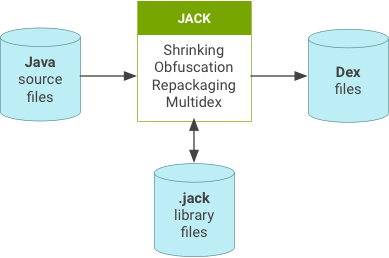
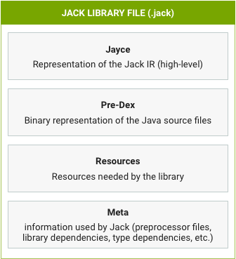
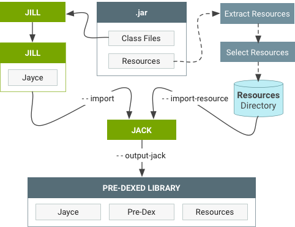

Jack is an Android toolchain that compiled Java source into Android dex bytecode. You don’t have to do anything differently to use Jack—just use your standard makefile commands to compile the tree or your project. Android 8.1 is the last release that uses Jack.
About Jack
Jack works as follows:
Jack library format
Jack has its own .jack file format that contains the pre-compiled dex code for the library, allowing for faster compilation (pre-dex).
Jill
The Jill tool translates the existing .jar libraries into the new library format, as shown below.
Jack compilation server
The first time Jack is used, it launches a local Jack compilation server on your computer. This server:
- Brings an intrinsic speedup because it avoids launching a new host JRE JVM, loading Jack code, initializing Jack, and warming up the JIT at each compilation. It also provides very good compilation times during small compilations (e.g. in incremental mode).
- Is a short-term solution to control the number of parallel Jack compilations. It avoids overloading your computer (memory or disk issue) because it limits the number of parallel compilations.
The Jack server shuts itself down after an idle time without any compilation.
It uses two TCP ports on the localhost interface and is not available
externally. All parameters (number of parallel compilations, timeout, ports
number, etc.) can be modified by editing the $HOME/.jack file.
$HOME/.jack file
The $HOME/.jack file contains the following settings for Jack
server variables in a full bash syntax:
SERVER=true. Enable the server feature of Jack.SERVER_PORT_SERVICE=8072. Set the TCP port number of the server for compilation purposes.SERVER_PORT_ADMIN=8073. Set the TCP port number of the server for admin purposes.SERVER_COUNT=1. Unused.SERVER_NB_COMPILE=4. Set the maximum number of allowed parallel compilations.SERVER_TIMEOUT=60. Set the number of idle seconds the server must wait without any compilation before shutting itself down.SERVER_LOG=${SERVER_LOG:=$SERVER_DIR/jack-$SERVER_PORT_SERVICE.log}. Set the file where server logs are written. By default, this variable can be overloaded by an environment variable.JACK_VM_COMMAND=${JACK_VM_COMMAND:=java}. Set the default command used to launch a JVM on the host. By default, this variable can be overloaded by environment variable.
Troubleshooting Jack compilations
| Problem | Action |
|---|---|
| Your computer becomes unresponsive during compilation or you experience Jack compilations failing on “Out of memory error” | You can improve the situation by reducing the number of simultaneous Jack
compilations by editing $HOME/.jack and changing
SERVER_NB_COMPILE to a lower value. |
| Compilations are failing on “Cannot launch background server” | The most likely cause is TCP ports are already used on your computer. Change
ports by editing $HOME/.jack (SERVER_PORT_SERVICE and
SERVER_PORT_ADMIN variables). To unblock the situation, disable the
Jack compilation server by editing $HOME/.jack and changing
SERVER to false. Unfortunately this will significantly slow down
your compilation and may force you to launch make -j with load
control (option -l of make). |
| Compilation gets stuck without any progress | To unblock the situation, kill the Jack background server using
jack-admin kill-server) then remove the temporary directories
contained in jack-$USER of your temporary directory
(/tmp or $TMPDIR). |
Finding the Jack log
If you ran a make command with a dist target, the Jack log is
located at $ANDROID_BUILD_TOP/out/dist/logs/jack-server.log.
Otherwise, you can find the log by running jack-admin server-log.
In case of reproducible Jack failures, you can get a more detailed log by
setting the following variable:
export ANDROID_JACK_EXTRA_ARGS="--verbose debug --sanity-checks on -D sched.runner=single-threaded"
Use standard makefile commands to compile the tree (or your project) and attach standard output and error. To remove detailed build logs, run:
unset ANDROID_JACK_EXTRA_ARGS
Jack limitations
- By default, the Jack server is mono-user and can be used by only one user on
a computer. To support additional users, select different port numbers for each
user and adjust
SERVER_NB_COMPILEaccordingly. You can also disable the Jack server by settingSERVER=falsein$HOME/.jack. - CTS compilation is slow due to current
vm-tests-tfintegration. - Bytecode manipulation tools (such as JaCoCo) are not supported.
Using Jack
Jack supports Java programming language 1.7 and integrates the additional features described below.
Predexing
When generating a Jack library file, the .dex of the library is
generated and stored inside the .jack library file as a pre-dex.
When compiling, Jack reuses the pre-dex from each library. All libraries are
pre-dexed:
Jack does not reuse the library pre-dex if shrinking, obfuscation, or repackaging is used in the compilation.
Incremental compilation
Incremental compilation means that only the components touched since the last compilation (and their dependencies) are recompiled. Incremental compilation can be significantly faster than a full compilation when changes are limited to a set of components.
Incremental compilation is not enabled by default (and is automatically
deactivated when shrinking, obfuscation, repackaging or multi-dex legacy is
enabled). To enable incremental builds, add the following line to the
Android.mk file of the project you want to build incrementally:
LOCAL_JACK_ENABLED := incremental
Shrinking and obfuscation
Jack uses proguard configuration files to enable shrinking and obfuscation.
Common options include the following:
-
@ -
-include -
-basedirectory -
-injars -
-outjars // only 1 output jar supported -
-libraryjars -
-keep -
-keepclassmembers -
-keepclasseswithmembers -
-keepnames -
-keepclassmembernames -
-keepclasseswithmembernames -
-printseeds
Shrinking options include the following:
-dontshrink
Obfuscation options include the following:
-
-dontobfuscate -
-printmapping -
-applymapping -
-obfuscationdictionary -
-classobfuscationdictionary -
-packageobfuscationdictionary -
-useuniqueclassmembernames -
-dontusemixedcaseclassnames -
-keeppackagenames -
-flattenpackagehierarchy -
-repackageclasses -
-keepattributes -
-adaptclassstrings
Ignored options include the following:
-
-dontoptimize // Jack does not optimize -
-dontpreverify // Jack does not preverify -
-skipnonpubliclibraryclasses -
-dontskipnonpubliclibraryclasses -
-dontskipnonpubliclibraryclassmembers -
-keepdirectories -
-target -
-forceprocessing -
-printusage -
-whyareyoukeeping -
-optimizations -
-optimizationpasses -
-assumenosideeffects -
-allowaccessmodification -
-mergeinterfacesaggressively -
-overloadaggressively -
-microedition -
-verbose -
-dontnote -
-dontwarn -
-ignorewarnings -
-printconfiguration -
-dump
Repackaging
Jack uses jarjar configuration files to do repackaging. While Jack is compatible with "rule" rule types, it is not compatible with "zap" or "keep" rule types.
Multidex support
Jack offers native and legacy multidex support. Since dex files are limited to 65K methods, apps with over 65K methods must be split into multiple dex files. For more details, refer to Building Apps with Over 65K Methods.